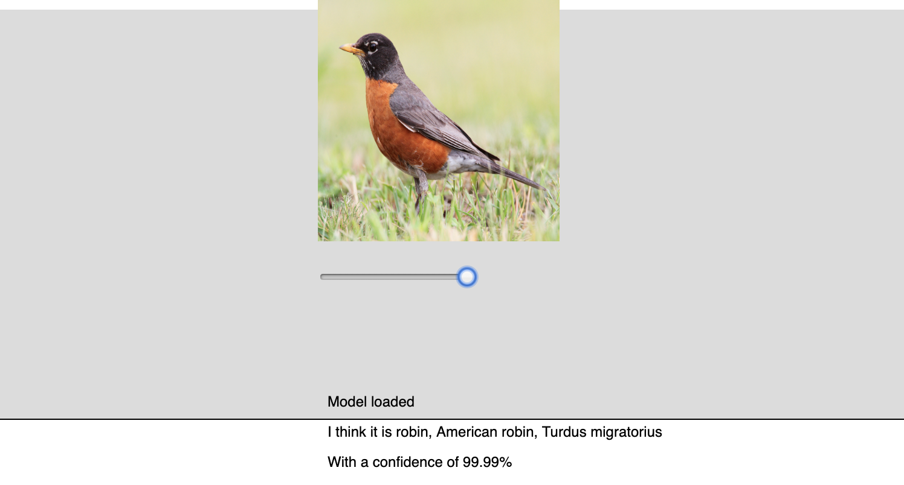

Right now, our model is pretty boring - it's just one picture, and there is no way for a user to interact. We want to make this more exciting, so we are going to do the following:
- Create an array of different images
- Create a slider so that the user can pick an image from the array
- Make the image appear on the screen and the model make a prediction about what it is seeing.
First, let's create an array that can hold all of our images. The initial repl.it has some images preloaded, and we will use these for now - eventually, you can go back and add in your own set of images and replace them in the array.
To add images to an array, we can do something like this, ideally at the top of our program where it has a global scope and can be used anywhere:
var listOfImg = ["cat.jpg", "dog.jpg", "mouse.jpg", "robin.jpg"]
This is great, but we haven't done anything with this array, nor do we have a way to call specific items from the array. While we could make an image randomly appear, that won't be super useful if we want to pull up information about a specific image. So, instead, let's create a slider that will pick an image for us. It might look something like the code below.
Notice that we have also used an array method to find the length of our array, rather than hard-coding in a number. This is useful if we want to add more images later - we don't have to worry about updating our code.
A final version of this can be found here.
